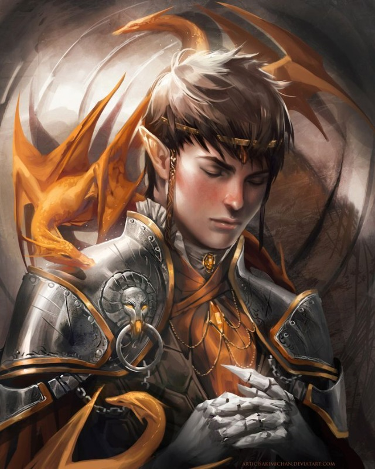

Lorielen
Cleric / religia / leczenie
Realna postac z data/heroes/lorielen.json. Rozpoznaj sens Popielnej Przysiegi i utrzymaj druzyne przy zyciu.
HP 14AC 15ReligionMedicine
Snapshot
- Class: Cleric, lvl 1.
- Ancestry: Elf, whisper elf.
- Gear: scimitar, hide armor, wooden shield.
- Setup: Sarenrae, heal font, healing domain.
Skille
- Religion: Serai, relikwiarz, undead, przysiega.
- Medicine: Tovin, ranni, stabilizacja.
- Diplomacy: Elna, Mira, Serai.
- Society: prawo, zeznania, ranga Odrana.
Umiejetnosci
- Heal font: leczenie i presja na undead.
- Domain Initiate: healers_blessing.
- Shield Block: reakcja z tarcza.
- Group Impression: +2 status do Diplomacy.
Taktyka
- Nie lecz kazdej rany; reaguj na realne ryzyko upadku.
- Przeciw undead pytaj o pozytywna energie.
- W dialogu z Serai uzywaj Religion.
- W finale wspieraj pokojowe zakonczenie dowodami.
Pytania do NPC
- Do Serai: "Jaka czesc przysiegi zostala zlamana?"
- Do Odrana: "Kto mial prawo dotknac relikwiarza?"
- Do Miry: "Czy twoj rytual naprawia przysiege, czy tylko ucisza popiol?"
Motywacja: prawo bez prawdy jest tylko narzedziem wladzy.